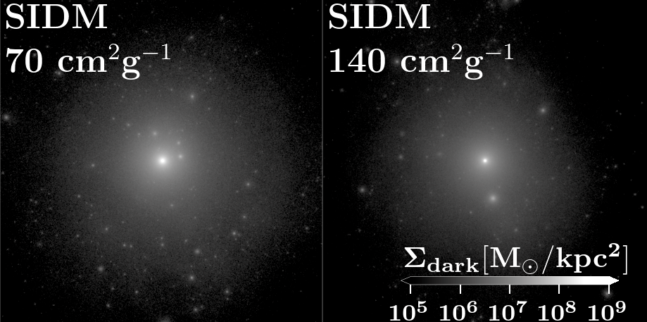

Research Highlights
Using the Milky Way as a dark matter laboratory — combining cosmological simulations, dynamical modelling, and stellar tracers to illuminate how dark matter shapes our Galaxy and what its particle nature leaves behind.

Shaping the Milky Way: Mergers & Cosmic Filaments
Dynamical models to characterize the disequilibrium distribution of dark matter in the Milky Way, tracing the interplay of merger history and large-scale cosmic filament accretion.
Read Paper
Stellar Streams in a Time-Evolving Milky Way
Evolution of stellar streams — tidal remnants of disrupted satellite galaxies — in realistic, time-dependent Milky Way potentials from zoomed cosmological hydrodynamical simulations.
In Preparation
Self-Interacting & Atomic Dark Matter
Probing alternative dark matter models — self-interacting and atomic dark matter — through their distinct observational signatures in the kinematics of Milky Way satellite galaxies and stellar stream morphology.
Read Paper